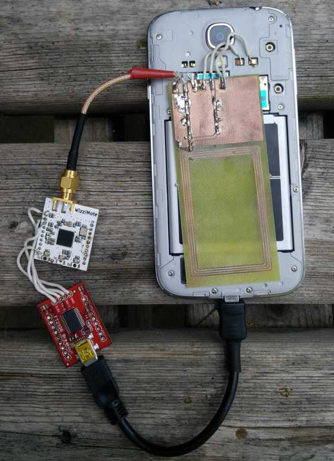

While smartphones already contain a myriad of communication technologies we thought it would be great to add DASH7 to this list. Adding DASH7 support to a smartphone allows to interact with wireless sensors at a larger range compared to for example BLE. However, since smarthpones are very space constrained the challenge is how to integrate the antenna for 433 or 868 MHz. For this reason, we decided to explore the feasibility of reusing an NFC antenna (which is already present in more and more smartphones) for the DASH7 communication as well.
The video below shows the use case where we have temperature sensor which transmits it's temperature reading over DASH7, which in turn will be received on and displayed by the smartphone. To show NFC is still working we first read an NFC tag containing the sensor's ID, which actives the reception in the smartphone app. The sensor is an STK3700 running the stk3700_sensor application which is part of OSS-7.
For this demo we used an off the shelf Sansung S4 smartphone. We attached an external antenna board to the NFC antenna connection pads. On the antenna board we have (besides the antenna itself) a diplexer circuit we designed which allows to use the antenna for both technologies by shielding them from each other and providing the correct matching. Attached to the antenna board is the NFC chip inside the smartphone on the one hand and a Wizzimote/CC430 SoC (the white board on the picture) which runs the OSS-7 stack. To be able to communicate between the OSS-7 stack and the smartphone we are using an UART to USB converter, which is the red board on the picture.

The results are very promising. It certainly is possible to use a combined antenna for NFC and DASH7. Because of this the biggest technical hurdle to integrating DASH7 into the space constrained smartphone is removed. What remains are a few passive components and an RF chip, which can be miniaturized easily. Currently we are using an external NFC antenna because this is easier to integrate. In the future we will look into using the internal antenna (which is located in the battery in this model) and improve the diplexer further.
Many thanks to Jens Vanhooydonck, who implemented this as part of his master thesis!